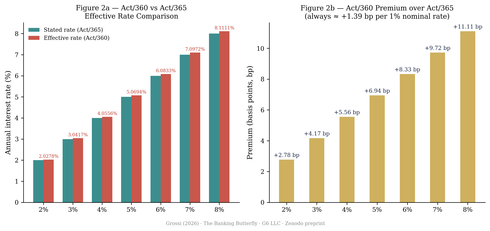
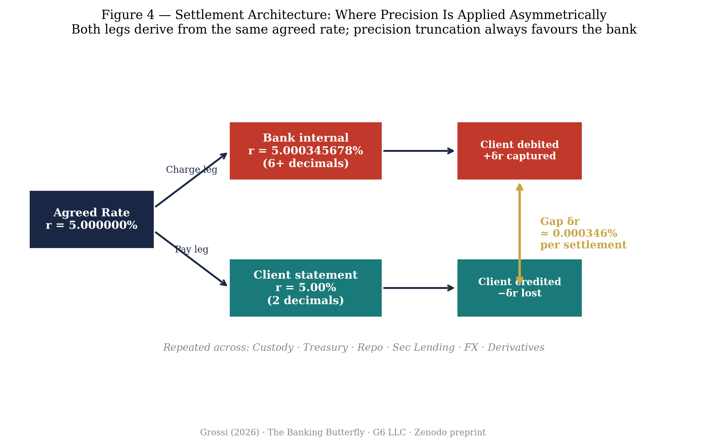
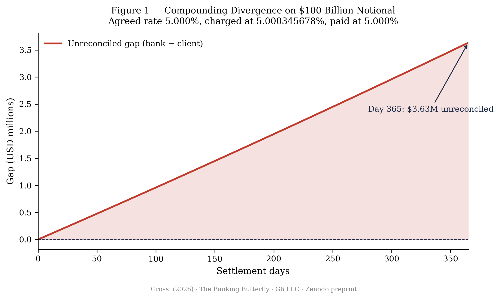
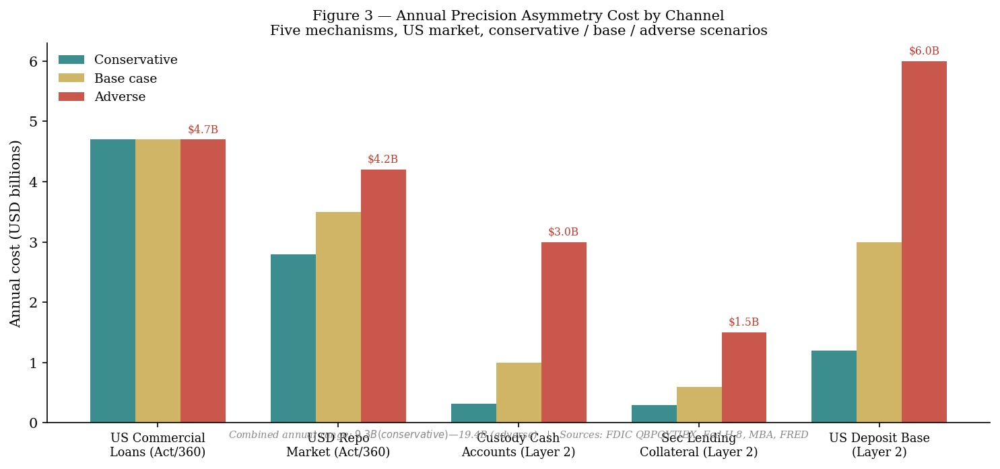
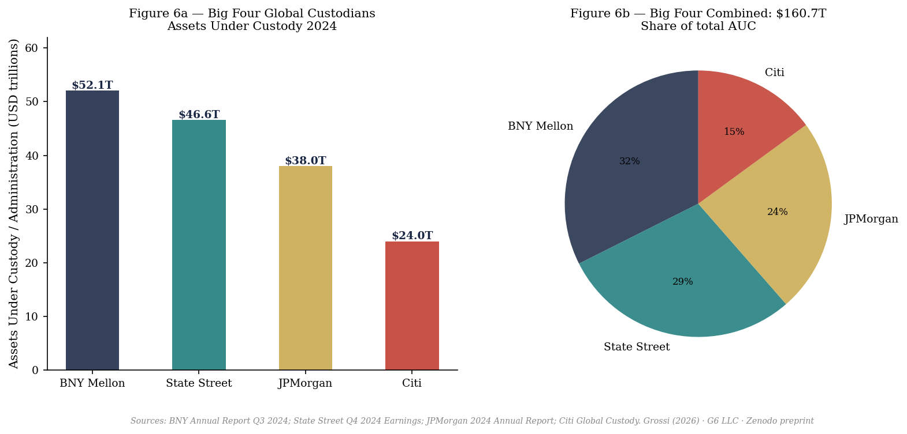
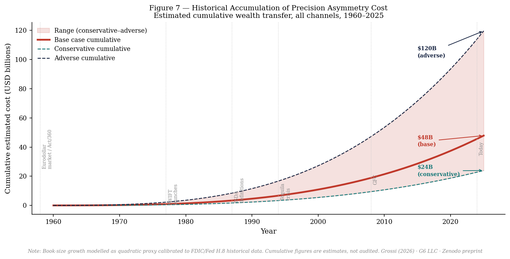
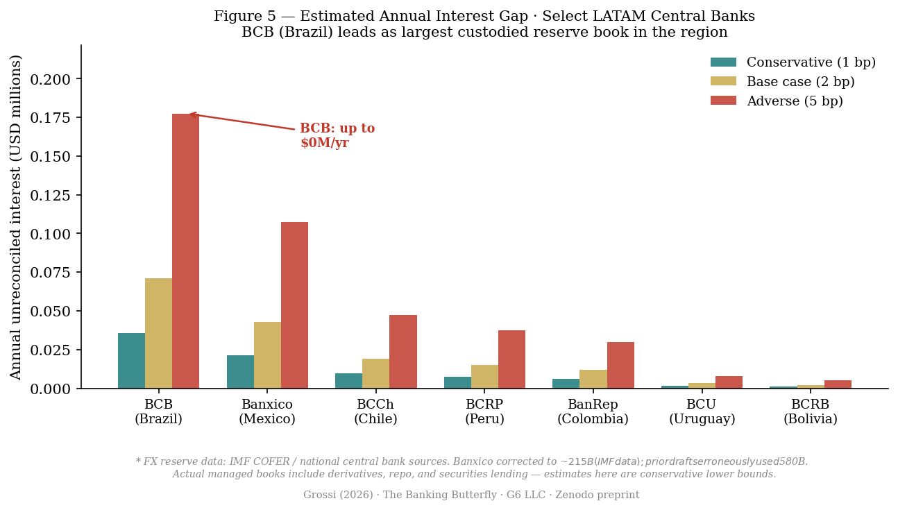

Decimal Precision Asymmetry in Interest Rate Settlement as a Systematic Wealth Transfer Mechanism — Evidence from Sovereign Custody, Global Custodians, Commercial Lending, and the USD Repo Market
Author's Note The author is a former employee of the category of institution described in this paper. He is bitter. He had what he considered his dream job — managing sovereign custody and treasury relationships in global securities services — and lost it in the financial crisis of 2008, a crisis whose structural costs, in his view, were absorbed by working people and not by the system that produced them. He carries student debt he does not expect to pay in full. The structural shifts to the economy are visible to him and are felt, even where they are not yet fully pronounced. He is aware that critics will use these facts as grounds to dismiss what follows without engaging the substance. He invites them to try, and then to run the diagnostic tests in §10. Pull one thousand settlements. Compute δr. Report what you find. The arithmetic in this paper does not depend on the author's emotional state. 365 divided by 360 is 1.013889 whether it is computed by a bitter former employee or by the Treasury of the United States. The mechanism either exists or it does not. The data will say.
Banks and global custodians compute interest charges at higher decimal precision than interest payments. This paper identifies, names, and quantifies the mechanism — decimal precision asymmetry — across five channels of the US and global financial system: the USD repo market, commercial loans, global custody cash accounts, securities lending cash collateral, and the domestic deposit base. The mechanism has two layers: (i) a day-count convention asymmetry in which charges are computed on an Act/360 basis while client statements reference Act/365 or stated annual rates, inflating effective charges by a factor of 365/360 ≈ 1.0139; and (ii) a precision truncation asymmetry in which the charge leg is computed at six or more decimal places while the pay leg is rounded to two or three before delivery to the client. The four largest global custodians — BNY Mellon, State Street, JPMorgan, and Citi — hold a combined $160 trillion in assets under custody and administration. Even a sub-basis-point precision gap across this base produces annual wealth transfers in the billions of dollars. Across all five channels, the estimated annual cost in the US market alone ranges from $9.6 billion (conservative) to $19.4 billion (adverse). The cumulative cost since computerised settlement became standard in the mid-1980s is estimated at $150–350 billion. For LATAM central banks, the largest single exposed institution is BCB (Brazil, ~$355B in reserves), not Banxico (Mexico, ~$215B). The paper proposes three diagnostic tests any central bank can run using data it already holds, a model disclosure clause for custodian agreements, and a minimum examination standard for banking supervisors.
Edward Lorenz (1963) observed that infinitesimally small perturbations in initial conditions produce exponentially diverging trajectories in chaotic atmospheric systems. The image that captured the public imagination — a butterfly's wing-beat in Brazil triggering a tornado in Texas — became shorthand for the sensitivity of complex systems to initial conditions. Less noticed is a precise financial analogue: a difference of four to six decimal places in an agreed interest rate, applied consistently to the charge leg and the pay leg of the same instrument in opposite directions, produces a deterministic, monotonically growing wealth transfer from client to financial institution.
Unlike the atmospheric case, this divergence is not chaotic. It is structural. The settlement infrastructure of global financial institutions computes what the client owes at maximum internal precision and reports what the client is owed at minimum client-facing precision. The difference — δr, the precision gap — is invisible at the transaction level. Across a $160 trillion global custody book, it accumulates to tens of billions of dollars annually.
This paper is grounded in direct operational experience. The author managed custody, treasury, securities lending, and foreign exchange relationships at major global banks, with Latin American central banks — including Banco de México (Banxico), Banco Central do Brasil (BCB), Banco Central de Chile (BCCh), Banco de la República (BanRep), and Banco Central de Reserva del Perú (BCRP) — as counterparties. The mechanism described here was observed in live account reconciliation. Colleagues in the securities services industry with whom the author worked were aware of the arithmetic; it was never surfaced to clients or regulators as a compliance matter.
The most documented layer is the day-count convention mismatch. Financial institutions frequently quote interest rates as annual percentages but compute charges using the Act/360 convention — dividing the annual rate by 360 days rather than 365 — while client-facing statements and reference rate benchmarks assume an Act/365 or 30/360 basis. The effective rate charged under Act/360 is:
At a stated rate of 5%, this produces an effective rate of 5.0694% — a premium of 6.94 basis points. The premium scales linearly with the nominal rate (approximately 1.39 bp per 1% of nominal rate) and applies every year, every settlement cycle, on every instrument computed on this basis.
Act/360 is the universal convention in USD money markets, the USD repo market, commercial and industrial loans, commercial real estate loans, CMBS, and syndicated lending.1,2 It is not hidden — it is disclosed in loan agreements and ISDA schedules — but the disclosure is often buried in technical definitions that non-specialist treasury staff at sovereign counterparties do not routinely audit against their actual account statements.

The second layer operates within the computational infrastructure and has, to the author's knowledge, never been named or quantified in the academic literature. When a bank or custodian computes interest on a charge leg — amounts owed to the institution — the internal calculation engine uses the full precision available in the system, typically six to eight decimal places. When it prepares the client statement, the rate applied to the pay leg — amounts owed by the institution — is rounded to two or three decimal places before the multiplication is performed. The agreed rate is identical on both sides of the ledger; the precision applied is not.
Concretely: if the agreed overnight rate is 5.000000%, the bank's charging engine may carry 5.000345678%, while the client's credit confirmation shows 5.00%. The per-settlement precision gap:
On a $100 billion notional position, this δr generates $345,678 per year — before compounding. The sign of this gap is always the same: positive for the institution, negative for the client. It is not random rounding noise. It is a directional, configurable property of bank settlement systems.

In Lorenz's system, nearby trajectories diverge at a rate characterised by a positive Lyapunov exponent λ > 0. In settlement arithmetic, the analogous structure is deterministic rather than chaotic:
The gap grows monotonically and predictably. The "butterfly" character comes from the initiating perturbation — δr of order 10⁻⁴ to 10⁻⁵ — being small enough to fall below the client's capacity to observe it in any single settlement, while its cumulative effect over a year on a sovereign-scale book is in the tens to hundreds of millions of dollars.
Unlike atmospheric chaos, the outcome is not sensitive to initial conditions in an unpredictable way — it is determined by them in a fully predictable, directional way. The "chaos" is social, not mathematical: the mechanism is invisible because the perturbation is sub-perceptual at the transaction level and the systems that would detect it (client-side reconciliation software) are typically configured to the same truncated precision as the client statement, making independent verification structurally impossible with standard tools.

The mechanism does not operate in a single market segment. It operates wherever a financial institution simultaneously holds a charge-leg and a pay-leg position versus the same counterparty at the same agreed rate. Five distinct channels are identified, each with different dominant layers and different base sizes.
| Channel | Primary layer | US/Global base (2024) | Annual cost (base case) |
|---|---|---|---|
| USD repo market | Layer 1 (Act/360) | $4–6T daily outstanding | $2.8–4.2B |
| US commercial loans (C&I + CRE) | Layer 1 (Act/360) | $6.7T outstanding | $4.7B |
| Global custody cash accounts | Layer 2 (precision) | ~$3.2T (2% of $160T AUC) | $0.6–3.0B |
| Securities lending cash collateral | Layer 2 (precision) | ~$2.85T (102% on $2.8T on loan) | $0.3–1.5B |
| US domestic deposit base | Layer 2 (precision) | ~$12T interest-bearing | $1.2–6.0B |
| Combined annual estimate (US market) | $9.6–19.4B | ||

The US repurchase agreement (repo) market operates entirely on an Act/360 day-count basis — this is not a lender-specific choice but an industry-wide convention for all USD overnight and term repo. Daily outstanding repo volume in the US typically runs $4–6 trillion. At an average 5% repo rate, the Act/360 premium of 6.94 basis points generates $2.8–4.2 billion in annual excess interest paid by repo borrowers. Sovereign counterparties who use repo to manage short-term liquidity on their reserves pay this premium on every transaction.
Commercial and industrial (C&I) loans outstanding at US commercial banks: approximately $2.8 trillion (Fed H.8, December 2024). Commercial real estate (CRE) debt outstanding: $3.94 trillion (Federal Reserve Z.1, 2025). Combined Act/360 book: approximately $6.7 trillion.3 Total annual Act/360 premium on this combined book at an average effective rate of 5%: $4.65 billion per year. This channel affects US businesses directly and US households indirectly through the cost of commercial real estate passed into rents, retail prices, and employment costs.
The four largest global custodians — BNY Mellon ($52.1T), State Street ($46.6T), JPMorgan ($38T), Citi ($24T) — held a combined $160.7 trillion in assets under custody and administration in 2024, approaching $180T by early 2026.4,5,6,7 A fraction of these assets — typically 1–3% — is held as uninvested cash in custody accounts, earning overnight rates credited to clients. On a $160T base, 2% cash = $3.2T in cash on which the precision truncation mechanism applies. At 5% rate and 2bp precision gap: $640M per year from this channel alone. The securities services revenues of the top 12 banks reached $43.9B in 2024,8 of which an undisclosed proportion derives from cash management spreads within custody.
Global securities lending on-loan balances averaged $2.74 trillion in Q4 2024, generating $976M in monthly revenue at the industry level.9 Cash collateral, typically posted at 102–105% of the loan value, creates a reinvestment pool of approximately $2.85T. The bank reinvests this pool and credits the lending client's account with a share of the reinvestment return. The precision with which the reinvestment rate is computed versus the rate credited to the client is not disclosed or standardised. A precision gap of 0.001% on $2.85T generates $28.5M per year; at 0.005%, $142M. Global securities lending revenue hit a record $15.3 billion in 2025,10 making this the fastest-growing channel of the mechanism.
Total US bank deposits in 2024 were approximately $18 trillion (FDIC), of which approximately $12 trillion are interest-bearing (savings accounts, money market deposits, CDs, and interest-bearing checking). Total interest expense across FDIC-insured institutions in 2024: approximately $530–545 billion annualised (FRED series QBPQYTIEX, Q4 2024: $137.2B).11 A precision truncation of 0.001–0.005% on the pay leg for $12T of interest-bearing deposits generates $1.2–6.0B per year. This channel directly affects American households — the 153 million US deposit account holders.

The scale of the custody industry transforms what appears to be a small arithmetic asymmetry into a mechanism of significant macroeconomic consequence. Consider the following: the combined GDP of all nations on Earth in 2024 was approximately $110 trillion. The Big Four custodians hold $160 trillion in assets on behalf of pension funds, sovereign wealth funds, central banks, insurance companies, and institutional investors. These clients generate cash flows — dividends, coupons, repo interest, securities lending returns — that pass through the custodian's settlement systems daily. On every cash flow, the precision gap operates.
| Custodian | AUC / AUA (2024) | Est. cash in custody (2%) | Annual gap at 2bp (base) |
|---|---|---|---|
| BNY Mellon | $52.1T | $1.04T | $208M |
| State Street | $46.6T | $932B | $186M |
| JPMorgan | $38.0T | $760B | $152M |
| Citi | $24.0T | $480B | $96M |
| Big Four combined | $160.7T | $3.21T | $642M/yr |
This table covers only the cash management component (Channel 3) and only the Big Four. Adding securities lending collateral (Channel 4) and the broader deposit and commercial lending bases (Channels 1, 2, and 5) produces the aggregate $9.6–19.4 billion annual estimate across the full US market.
Three scenarios are modelled. The conservative scenario assumes the minimum documented asymmetry — primarily the Act/360 premium on commercial loans and repo, with minimal precision truncation on custody and deposits. The base case adds moderate precision truncation across all channels. The adverse scenario reflects full Act/360 exposure plus active precision truncation across custody, securities lending, and deposits.
The mechanism has been operating across different time horizons in different channels. Act/360 in the Eurodollar market dates to the late 1950s. SWIFT electronic settlement launched in 1977. ISDA codified day-count conventions in 1987 and 1991. The major bank settlement system vendors (Murex, Misys/Finastra, Calypso, SunGard) were configured and deployed through the 1980s and 1990s — and the precision settings made at deployment have generally not been revisited as a client disclosure matter. For LATAM central banks specifically, the large-book exposure begins with the reserve buildups following the Tequila crisis (1994) and Brazilian Real crisis (1999).

Latin American central banks represent the highest-concentration sovereign exposure to this mechanism outside the major Asian reserve accumulators. An important correction from earlier drafts of this paper: the largest reserve holder in the region is BCB (Brazil) at approximately $355 billion, not Banco de México, whose international reserves are approximately $215 billion. The earlier figure of $580B for Banxico was an error and has been corrected.

| Central bank | FX reserves (proxy) | Conservative (1bp) | Base (2bp) | Adverse (5bp) |
|---|---|---|---|---|
| BCB — Brazil | ~$355B | $35.5M | $71M | $177M |
| Banxico — Mexico | ~$215B | $21.5M | $43M | $107M |
| BCCh — Chile | ~$95B | $9.5M | $19M | $47M |
| BCRP — Peru | ~$75B | $7.5M | $15M | $37M |
| BanRep — Colombia | ~$60B | $6.0M | $12M | $30M |
| BCU — Uruguay | ~$16B | $1.6M | $3.2M | $8M |
| BCRB — Bolivia | ~$10B | $1.0M | $2.0M | $5M |
| LATAM total (est.) | ~$826B | $82M | $165M | $411M/yr |
These are conservative estimates. The FX reserve figure is used as a proxy for the managed book, but actual books include repo, derivatives, and securities lending notionals that may be two to five times the reserve figure for active reserve managers. On a $1 trillion effective notional at 5bp combined asymmetry, the LATAM annual loss exceeds $500 million.
Over 25 years of high-exposure operation (1999–2024), the estimated cumulative LATAM loss is $3–10 billion, depending on the scenario and the actual effective notional of each managed book.
In Illinois, financial institutions encountered class action lawsuits and mortgage foreclosure defences arising from the 365/360 method (legally equivalent to Act/360). Courts in Cook County generally ruled in favour of lenders on the grounds that the Illinois Interest Act does not apply when a promissory note clearly states the specific basis for interest computation.12 The National Law Review summarised the situation: "borrowers are claiming that the 365/360 method violates the Illinois Interest Act because certain promissory notes refer to interest being calculated 'per annum' or 'annually.'" Illinois subsequently considered legislation validating the 365/360 method. The precedent established — disclosure defeats the claim — is the legal foundation on which Act/360 currently rests throughout the US.
The Federal Housing Administration paid approximately $320 million in a 2012 settlement after borrowers were found to have been charged Act/360 rather than the Act/365 basis stated in their loan documents.13 In Komatsu Financial v. Wells Fargo Bank (N.D. Ill. 2015), the court found Act/360 to be a separately negotiable term that cannot be assumed as a market standard without disclosure.
The legal precedents above apply exclusively to Layer 1 — the Act/360 day-count convention — which is typically disclosed in loan documents, even if the disclosure is not prominent. Layer 2 — precision truncation — has no equivalent disclosure. No client-facing term sheet, ISDA schedule, or custody agreement specifies the decimal precision that will be applied to the charge leg versus the pay leg of each settlement. The disclosure defence therefore does not apply to Layer 2: there is nothing disclosed.
This distinction is legally significant. The LIBOR manipulation settlements (2012–2016) established that basis-point-level asymmetry in interbank rate setting constitutes market manipulation under US and UK law, with aggregate fines exceeding $9 billion. Layer 2 operates at sub-basis-point precision (0.0001–0.001%) — below individual LIBOR manipulation magnitude — but the structural directionality (always positive for the bank, never for the client) is precisely what distinguished LIBOR manipulation from random dealer error in the regulatory findings.
Fabozzi (2012) documents day-count conventions comprehensively but does not address the precision truncation layer or its aggregate magnitude.14 Lyons (2001) identifies sub-pip precision asymmetry in FX dealer behaviour but does not extend the analysis to custody or settlement.15 Chalmers, Edelen & Kadlec (2001) document rounding asymmetry in mutual fund NAV computation as a systematic wealth transfer, the closest analogue in the academic literature.16 None of these papers models the mechanism as a positive Lyapunov exponent in settlement arithmetic, aggregates across all five channels, or addresses sovereign-scale custody books. To the author's knowledge, no prior paper names or quantifies the precision truncation layer.
Within the dm³ framework (Grossi, 202617), the settlement architecture instantiates a case of operator non-commutativity. The operator chain G = U ∘ F ∘ K ∘ C maps initial conditions through constraint (C), folding (F), kinetic closure (K), and unity (U). The key property is [K, F] ≠ 0: the order in which constraint and folding are applied determines the outcome.
In the settlement context: C is the agreed rate; F is the precision function applied to that rate; K is the compounding rule (daily, monthly, Act/360 vs. Act/365). Applying F before K on the charge leg (internal precision, then compound) and K before F on the pay leg (compound at agreed rate, then truncate before reporting) is exactly [K, F] ≠ 0 applied asymmetrically. The consequence mirrors the zeolite selectivity result (Grossi & collaborators, 202618): in ZSM-5, C→K→F→U (constraint first) produces near-zero selectivity variance; in MCM-22, C→F→K→U (folding first) produces 35× selectivity amplification. In settlement, the asymmetric application of F before vs. after K — always chosen to favour the institution — produces a deterministic, monotonically growing wealth transfer.
Extract a sample of 1,000 consecutive settlements across all instrument types from the custodian bank. For each settlement, record (a) the rate applied on the charge leg, taken from the bank's own internal confirmation or SWIFT MT message, and (b) the rate appearing on the client credit confirmation for the pay leg. Compute δr = r_charge − r_pay for each pair. If the mean of δr is significantly positive and the sign is consistent — always positive, never negative — the asymmetry is structural. A Kolmogorov–Smirnov test against the null of zero-mean symmetric δr provides the statistical test. This test requires no access to bank systems — only the client's own incoming and outgoing confirmations.
For all USD-denominated fixed-income positions in custody, request from the custodian bank the day-count convention applied to each accrual computation. Compare to the convention specified in the original trade confirmation or ISDA schedule. For all Act/360 positions not explicitly agreed as Act/360 in the term sheet, compute the effective rate premium r × (365/360) − r and aggregate across the book. This test can be completed in a single spreadsheet using data the central bank already holds.
Select a position held in custody for three or more years with the same custodian. Recompute all interest accruals from inception using the rate specified in the original trade confirmation, applied at the precision stated in that confirmation (typically 2–4 decimal places), using Act/365 and a 365-day year. Compare the recomputed total to the sum of all credits received on the pay leg. The difference is the cumulative unreconciled gap for that position. This test requires no current system access — only original trade confirmations and historical custody statements, both of which the central bank possesses and which custodian agreements require the custodian to retain.
The following clause should be incorporated into all custodian agreements and ISDA master agreements between financial institutions and sovereign counterparties:
Banking supervisors — the OCC for nationally chartered banks, the Federal Reserve for state-chartered members and BHCs, the FDIC for state non-members — should add the following to standard safety and soundness examination procedures: a review of the settlement system configuration for day-count convention and decimal precision on charge legs versus pay legs for each asset class. Examiners should request a sample of 500 settlements across five asset classes and independently recompute both legs to verify precision equivalence. Where material asymmetry is found, examiners should assess whether disclosure is adequate under 12 CFR Part 1026 (Regulation Z) and applicable ISDA definitions.
CEMLA member central banks — representing 50+ institutions managing combined reserves exceeding $1 trillion — should adopt a coordinated protocol requiring custodian banks seeking to manage LATAM sovereign reserves to provide annual precision certification as described in §11.1. A CEMLA working group on settlement precision standards, coordinating with the BIS Committee on Payments and Market Infrastructures (CPMI), could establish this as a regional best practice and create the data infrastructure for the empirical validation of this paper's estimates.
This paper identifies and names a structural mechanism — decimal precision asymmetry — operating across five channels of the global financial system. In the USD repo market ($4–6T daily), US commercial loans ($6.7T), global custody cash accounts ($3.2T within a $160T AUC base), securities lending cash collateral ($2.85T), and the US domestic deposit base ($12T interest-bearing), financial institutions systematically compute what counterparties owe them at higher decimal precision than what they owe counterparties. The mechanism has two layers: Act/360 day-count asymmetry (documented, legally defended on disclosure grounds) and precision truncation (undocumented, not disclosed, not examined).
The estimated annual cost across all five channels in the US market is $9.6–19.4 billion. The cumulative cost since computerised settlement standardised these configurations in the mid-1980s is estimated at $150–350 billion. For LATAM central banks alone, the annual cost is $82–411 million; the 25-year cumulative cost is $3–10 billion.
The mechanism does not require intent or individual wrongdoing. It is a structural feature of how bank settlement systems were configured during the computerisation of financial infrastructure — a configuration choice that has never been made visible to clients or supervisors. This paper makes it visible. The three diagnostic tests in §10 allow any central bank to measure their own exposure using data they already hold. The policy recommendations in §11 provide a template for contract clauses and examination standards that cost nothing to implement.
The author observes that the scale of the Big Four custodians — $160 trillion in assets under custody against a global GDP of $110 trillion — makes the custody channel the most structurally significant, even if its per-dollar precision gap is smaller than the Act/360 premium in commercial lending. When the mechanism operates on assets exceeding global GDP, even a sub-basis-point asymmetry becomes a policy matter.
[1] Fabozzi, F.J. (2012). Bond Mathematics: The Theory Behind the Formulas. Wiley Finance. §2: Day Count Conventions.
[2] ISDA (1991, 2006). 2006 ISDA Definitions, Section 4.16: Day Count Fractions. International Swaps and Derivatives Association. Available at isda.org.
[3] Mortgage Bankers Association (2025). "Total Commercial Real Estate Borrowing and Lending Increased 16 Percent in 2024." MBA Newsroom, April 24, 2025. Federal Reserve Z.1 Financial Accounts of the United States, March 2025.
[4] BNY Mellon (2024). Q3 2024 Earnings Release: Assets under custody and/or administration: $52.1 trillion. bny.com.
[5] State Street Corporation (2025). "Fourth-Quarter and Full-Year 2024 Financial Results." Assets under custody and/or administration: $46.6 trillion. investors.statestreet.com.
[6] JPMorgan Chase (2025). 2024 Annual Report and Q4 2024 Earnings Release. Assets under custody: $35–38 trillion. jpmorganchase.com.
[7] Global Custodian (2026). "A New Era of Custody: How the Biggest Four Players are Shaping the Future of Global Securities Services." January 2026. globalcustodian.com.
[8] S&P Global Market Intelligence (2025). "Global Securities Services Revenues Seen Resilient to 2025 Turmoil." Combined revenues of top 12 banks: $43.9B in 2024. spglobal.com.
[9] S&P Global Market Intelligence (2025). "Securities Finance December, Q4, H2 and Full Year Snapshot 2024." Average on-loan balances Q4 2024: $2.74 trillion; monthly revenue December 2024: $976M.
[10] Hedgeweek (2025). "Global Securities Lending Revenue Hits Record $15.3bn in 2025." hedgeweek.com.
[11] Federal Reserve Bank of St. Louis — FRED (2026). QBPQYTIEX: Income and Expense: Total Interest Expense, FDIC-insured commercial banks. Q4 2024: $137,187.812M. fred.stlouisfed.org/series/QBPQYTIEX.
[12] Shapiro, E.D., Much Shelist P.C. (2010). "The 365/360 Method of Calculating Interest: Lenders and Borrowers Square Off." National Law Review, May 30, 2010. natlawreview.com.
[13] U.S. Department of Justice (2012). "FHA Settlement — Act/360 Overcharge." Press release, February 9, 2012. justice.gov.
[14] Fabozzi, F.J. (2012). Op. cit.
[15] Lyons, R.K. (2001). The Microstructure Approach to Exchange Rates. MIT Press. Ch. 3.
[16] Chalmers, J.M.R., Edelen, R.M., & Kadlec, G.B. (2001). "On the perils of financial intermediaries setting security prices: The mutual fund wild card option." Journal of Finance, 56(6), 2209–2236.
[17] Grossi, P.N. (2026). Principia Orthogona — Series dm³, Volume II: TOGT. Zenodo. doi:10.5281/zenodo.20159456.
[18] Grossi, P.N. (2026). "Contact-Geometric Theory of Generative Transitions." Zenodo. doi:10.5281/zenodo.20682934.
[19] Adventures in CRE (2025). "30/360, Actual/365, and Actual/360 — How Lenders Calculate Interest on CRE Loans." adventuresincre.com/lenders-calcs. Updated July 2025.
[20] Lorenz, E.N. (1963). "Deterministic Nonperiodic Flow." Journal of the Atmospheric Sciences, 20(2), 130–141.
© 2026 Pablo Nogueira Grossi · G6 LLC · Newark, NJ · CC BY 4.0.
This preprint has not been peer-reviewed. Cite as: Grossi, P.N. (2026). "The Banking Butterfly: Decimal Precision Asymmetry in Interest Rate Settlement as a Systematic Wealth Transfer Mechanism." G6 LLC Research Working Paper / Zenodo preprint. doi:10.5281/zenodo.20779418.